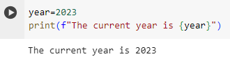

print(): f-strings

In the image below, we use an f-string to add an extra level of complexity to our statement. To make an f-string, you put print(f" "). Having the f before the quotation mark tells Python that it is an f-string.
To better understand the code, lets go step by step. First, the variable “year” is set to an integer with a value of 2023. Next, we use an f-string to input that variable into our print statement. Notice how we put the variable inside of {}. Without the {}, it would literally read “year”. By putting it inside of {}, we can preform mathematical operations and other processing methods that we don't want the viewer to see.
Exit
Next
Back